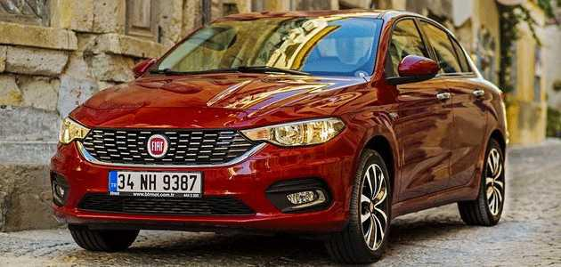
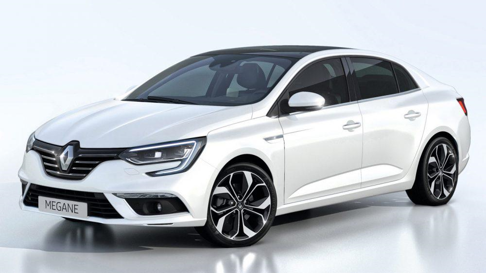
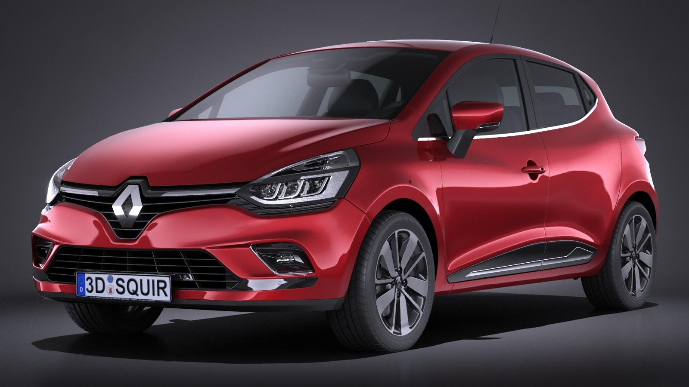
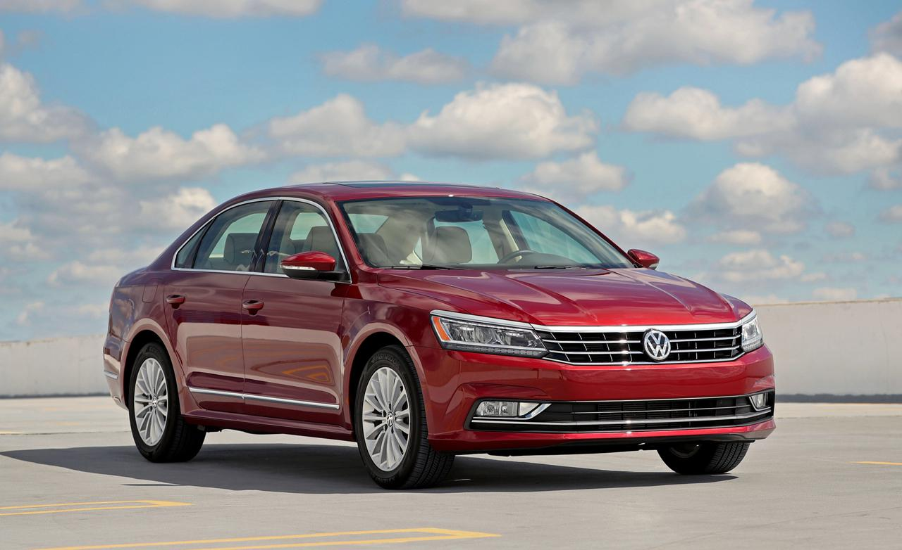
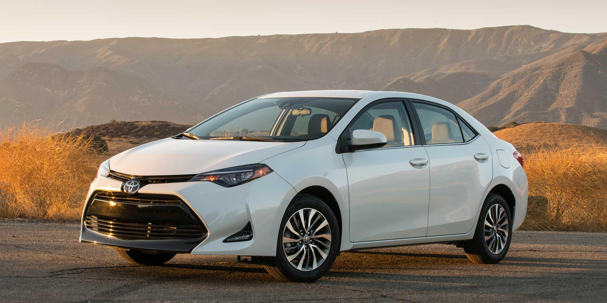
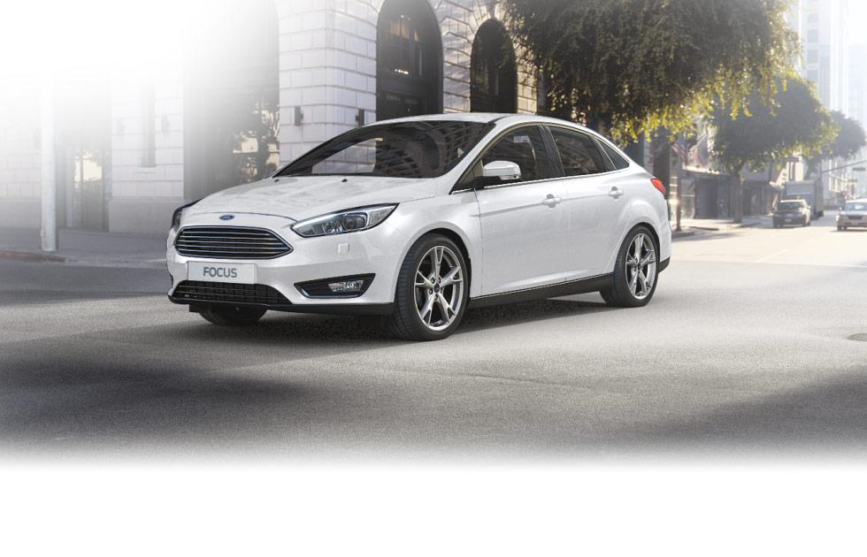
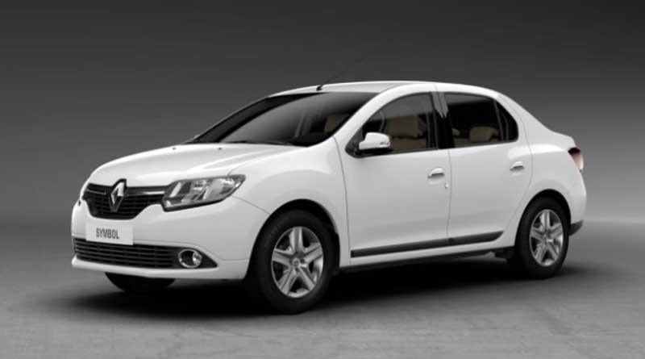
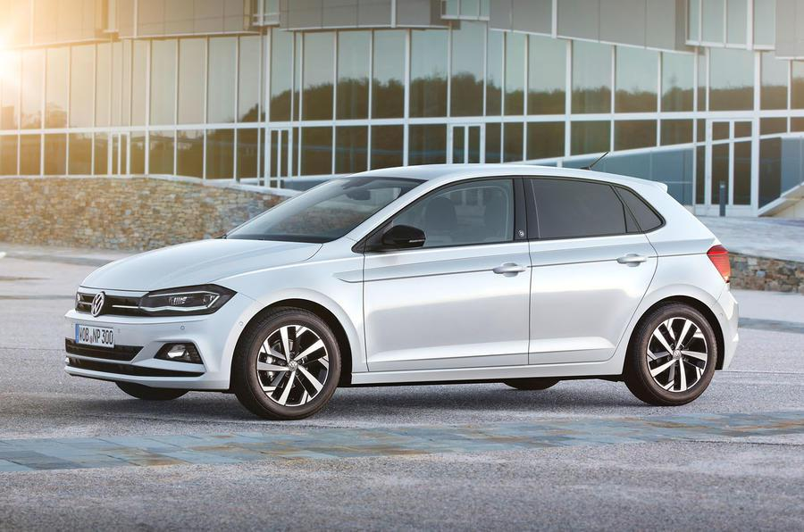
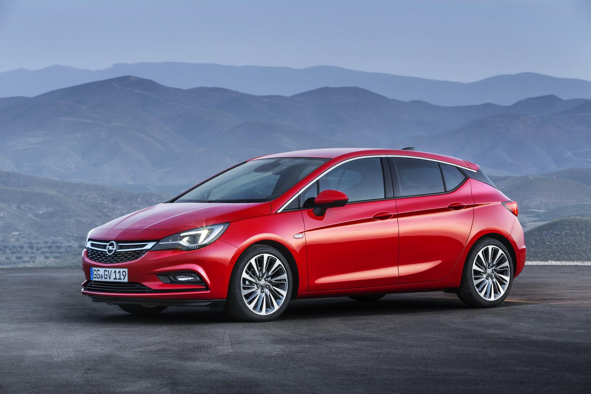
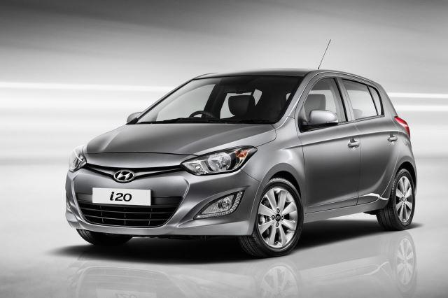

2017 Yilinda En Cok Satilan Otomobiller
1-) Fiat Egea - 32.999 adet

2-) Renault Megane - 28.766 adet

3-) Renault Clio - 23.995 adet

4-) Volkswagen Passat - 21.561 adet

5-) Toyota Corolla - 18.993 adet

6-) Ford Focus - 16.688 adet

7-) Renault Symbol - 16.667 adet

8-) Volkswagen Polo - 16.238 adet

9-) Opel Astra - 15.334 adet

10-) Hyundai i20 - 15.040 adet
